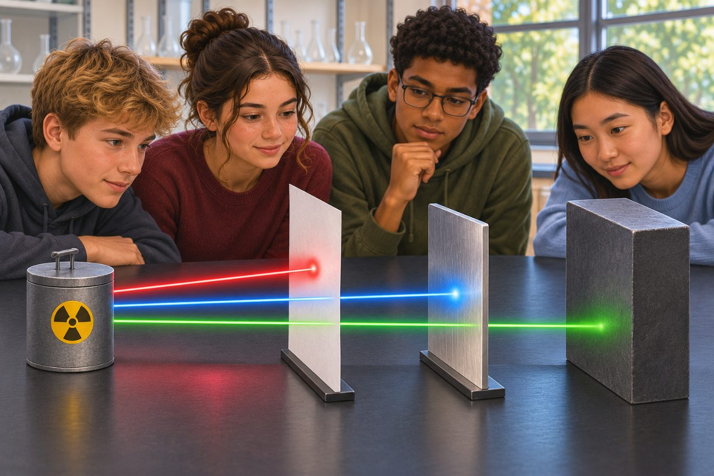

Drei Arten im Abschirmversuch

Denk mal nach: Drei Strahlen, drei Hindernisse: ein Blatt Papier, eine dünne Metallplatte, ein dicker Block. Welcher Strahl kommt wohl am weitesten?
Radioaktive Stoffe senden unsichtbare Strahlung aus. Forscher stellten verschiedene Materialien in den Weg und maßen mit einem Zähler, wie viel Strahlung noch durchkommt. Sie haben die Strahlung .
Dabei kam heraus: Es gibt nicht nur eine Strahlung, sondern drei Arten. Sie heißen nach den ersten drei Buchstaben des griechischen Alphabets: , und .
So verschieden sind die drei:
- α-Strahlung bleibt schon in einem Blatt Papier oder einer Postkarte stecken. Ihre Reichweite ist sehr kurz – in der Luft nur wenige Zentimeter.
- β-Strahlung geht durch Papier hindurch. Eine Aluminiumplatte von 1 mm Dicke hält sie aber auf.
- γ-Strahlung geht durch Papier und Aluminium. Selbst 13 mm Blei lassen noch die Hälfte durch. Um sie ganz abzuschirmen, braucht man mindestens 20 cm Blei. In der Luft reicht sie mehrere Kilometer weit.
Probiere es im Labor unten selbst aus.
Wähle einen Strahler und schiebe ein Hindernis in den Strahl. Der Zähler zeigt, wie viele Impulse pro Minute ankommen (die Nullrate ist schon abgezogen). Teste jeden Strahler mit allen vier Hindernissen – deine Messwerte landen in der Tabelle.
| Strahler | Papier | 1 mm Aluminium | 13 mm Blei | 20 cm Blei |
|---|
Denk mal nach: Beim Röntgen beim Zahnarzt bekommst du eine schwere Schürze umgelegt – sie enthält Blei. Und warum geht die Zahnärztin hinter die Wand, bevor sie den Knopf drückt? Röntgenstrahlen sind keine radioaktive Strahlung, werden aber genauso abgeschirmt wie γ-Strahlung.
MERKE
- Es gibt drei Strahlungsarten: α-, β- und γ-Strahlung.
- α-Strahlung: Schon Papier hält sie auf. β-Strahlung: 1 mm Aluminium schirmt sie ab.
- γ-Strahlung: 13 mm Blei halbieren sie nur. Ganz abgeschirmt wird sie erst von mindestens 20 cm Blei.
Was hält welche Strahlung auf?
Tippe zuerst auf eine Lücke, dann auf das passende Wort. Zwei Wörter bleiben übrig.
Im elektrischen Feld
Ein zweiter Versuch: Die Strahlung fliegt zwischen zwei Metallplatten hindurch. Eine Platte ist positiv geladen (Pluspol +), die andere negativ (Minuspol −). Zwischen den Platten herrscht ein .
Du kennst die Regel: Gegensätzliche Ladungen ziehen sich an, gleiche Ladungen stoßen sich ab. Ein geladenes Teilchen wird im Feld also zu einer Platte hingezogen – es wird abgelenkt. Was keine Ladung hat, fliegt geradeaus.
Das Ergebnis: α-Strahlung wird leicht zum Minuspol abgelenkt – sie ist positiv. β-Strahlung wird stark zum Pluspol abgelenkt – sie ist negativ. γ-Strahlung fliegt geradeaus – sie ist ungeladen.
α-Teilchen sind aus 2 und 2 . Sie sind schwer und werden deshalb nur wenig abgelenkt. β-Teilchen sind schnelle : winzig und fast ohne Masse. α und β sind also Teilchenstrahlung. γ-Strahlung dagegen ist eine wie Licht, aber mit viel mehr Energie.
MERKE
- Im elektrischen Feld wird α-Strahlung leicht zum Minuspol abgelenkt (positiv geladen), β-Strahlung stark zum Pluspol (negativ geladen). γ-Strahlung wird nicht abgelenkt (ungeladen).
- α = Heliumkerne (2 Protonen + 2 Neutronen), β = schnelle Elektronen. Beide sind Teilchenstrahlung.
- γ = elektromagnetische Welle wie Licht, aber mit viel mehr Energie.
Was stimmt?
Steckbriefe der drei Strahlungsarten
Tippe eine Karte an und dann die passende Strahlungsart.
Erkläre in eigenen Worten ✨ KI prüft
Schreibe ganze Sätze oder Stichpunkte. Die KI achtet nur auf den Inhalt, nicht auf die Rechtschreibung.
Isotope
Jeder Atomkern besteht aus Protonen (rot) und Neutronen (blau). Die Zahl der Protonen legt fest, welches es ist: Wasserstoff hat 1 Proton, Helium 2, Kohlenstoff immer 6. Diese Zahl heißt .
Zählt man Protonen und Neutronen zusammen, erhält man die . Sie steht hinter dem Namen: Kohlenstoff-14 hat 14 Kernbausteine, nämlich 6 Protonen und 8 Neutronen.
Bei einem Element kann die Zahl der Neutronen verschieden sein. Atome eines Elements mit verschieden vielen Neutronen heißen .
Isotope reagieren chemisch genau gleich, sind aber verschieden schwer. Beim Wasserstoff gibt es drei: den normalen Wasserstoff H-1, H-2 und H-3.
Tippe nacheinander auf die drei Wasserstoff-Isotope. Vergleiche ihre Kerne und ihre Masse.
MERKE
- Die Zahl der Protonen (Kernladungszahl) bestimmt das Element. Massenzahl = Protonen + Neutronen.
- Isotope = Atome desselben Elements mit verschieden vielen Neutronen. Sie reagieren chemisch gleich, sind aber verschieden schwer.
- Wasserstoff: H-1 (1 Proton), Deuterium H-2 (1 Proton + 1 Neutron, etwa doppelt so schwer), Tritium H-3 (1 Proton + 2 Neutronen, etwa dreimal so schwer).
Begriff und Erklärung
Tippe links einen Begriff an und dann rechts die passende Erklärung.
Wie viele Neutronen?
Neutronen = Massenzahl − Protonen. Tippe zuerst auf eine Lücke, dann auf das passende Wort. Zwei Wörter bleiben übrig.
α- und β-Zerfall
Woher kommt die radioaktive Strahlung? Aus dem Atomkern! Manche Kerne sind . Irgendwann wandeln sie sich um und schleudern dabei ein Teilchen heraus. Das nennt man oder Kernumwandlung.
α-Zerfall: Vor allem schwere Kerne schleudern einen Heliumkern heraus. Der Kern verliert 2 Protonen und 2 Neutronen. Mit 2 Protonen weniger ist er ein anderes Element: Aus Radon-222, einem radioaktiven Gas, wird Polonium-218.
β-Zerfall: Im Kern verwandelt sich ein Neutron in ein Proton und ein Elektron. Das Elektron wird herausgeschleudert – das ist die β-Strahlung. Der Kern hat jetzt ein Proton mehr: Er ist ein neues Element. Aus Kohlenstoff-14 wird Stickstoff-14. Die Massenzahl bleibt gleich.
γ-Strahlung entsteht bei fast jeder Kernumwandlung zusätzlich. Sie trägt keine Teilchen weg. Element und Massenzahl ändern sich durch sie nicht.
MERKE
- Radioaktive Strahlung entsteht, wenn sich instabile Atomkerne umwandeln (radioaktiver Zerfall).
- α-Zerfall: Der Kern schleudert einen Heliumkern heraus (2 Protonen + 2 Neutronen). Massenzahl − 4, Protonen − 2 → neues Element (Radon-222 → Polonium-218).
- β-Zerfall: Ein Neutron wird zu Proton + Elektron, das Elektron fliegt heraus. Protonen + 1, Massenzahl bleibt → neues Element (Kohlenstoff-14 → Stickstoff-14).
- γ-Strahlung: Element und Massenzahl bleiben gleich.
α-Zerfall, β-Zerfall oder γ-Strahlung?
Tippe eine Karte an und dann den passenden Bereich.
Erkläre in eigenen Worten ✨ KI prüft
Schreibe ganze Sätze oder Stichpunkte. Die KI achtet nur auf den Inhalt, nicht auf die Rechtschreibung.
Die Zerfallsgleichungen
Einen Zerfall kann man kurz als aufschreiben. Jeder Kern bekommt sein Zeichen aus dem und zwei Zahlen davor:
22688Ra oben die Massenzahl (Protonen + Neutronen), unten die Kernladungszahl (Protonen). Radium-226 hat also 88 Protonen.
Das α-Teilchen ist ein Heliumkern: 42He. Das Elektron schreibt man 0−1e: Es hat fast keine Masse (oben 0) und ist negativ geladen (unten −1).
Die Regel: Kein Kernbaustein geht verloren. Die Zahlen oben sind links und rechts vom Pfeil zusammen gleich groß – die Zahlen unten auch.
- Ausgangskern hinschreiben, dann Pfeil.
- Teilchen dazuschreiben: α → 42He, β → 0−1e
- Massenzahl (oben) des neuen Kerns ausrechnen.
- Kernladungszahl (unten) ausrechnen.
- Im Periodensystem das Element zu dieser Zahl suchen.
- Probe: oben und unten zusammenzählen.
Kurz: α-Zerfall: oben − 4, unten − 2. β-Zerfall: oben bleibt gleich, unten + 1.
Zum Nachschlagen: Ausschnitt aus dem Periodensystem
Die kleine Zahl ist die Kernladungszahl (Zahl der Protonen).
MERKE
- In der Zerfallsgleichung steht oben die Massenzahl, unten die Kernladungszahl.
- Links und rechts vom Pfeil sind die Summen oben und unten gleich.
- α-Zerfall: Massenzahl − 4, Kernladungszahl − 2. β-Zerfall: Massenzahl bleibt, Kernladungszahl + 1. Beispiel β: 146C → 147N + 0−1e, denn 6 = 7 + (−1).
α-Zerfall von Uran-238
Gehe die Schritte durch. Tippe zuerst auf eine Lücke, dann auf das passende Wort. Drei Wörter bleiben übrig.
β-Zerfall von Cäsium-137 und Tritium
Tippe zuerst auf eine Lücke, dann auf das passende Wort. Drei Wörter bleiben übrig.
Training
Löse das Kreuzworträtsel
Tippe in ein Kästchen und schreibe. Tippst du ein Kästchen zweimal an, wechselt die Richtung. Hängst du fest? Bei jeder Frage hilft 💡 Tipp – erst ein Hinweis, dann der Anfangsbuchstabe. Mit 📋 Wörter zeigen siehst du alle Lösungswörter.
Kreuze an
Profi-Check, Lernkarten und Regelheft
Alpha, Beta, Gamma – die Strahlungsarten
Radioaktive Stoffe senden drei Strahlungsarten aus: α, β und γ. Man unterscheidet sie durch Abschirmen und durch Ablenken im elektrischen Feld.
| α-Strahlung | β-Strahlung | γ-Strahlung | |
|---|---|---|---|
| Was ist das? | Heliumkerne (2 p + 2 n) | schnelle Elektronen | elektromagnetische Welle (wie Licht, viel mehr Energie) |
| Ladung | positiv | negativ | ungeladen |
| im elektrischen Feld | leicht zum Minuspol | stark zum Pluspol | nicht abgelenkt |
| abgeschirmt von | Papier | 1 mm Aluminium | 13 mm Blei: nur Hälfte; ganz erst ab 20 cm Blei |
α und β sind Teilchenstrahlung, γ ist eine elektromagnetische Welle.
Isotope = Atome desselben Elements (gleich viele Protonen) mit verschieden vielen Neutronen. Chemisch gleich, aber verschieden schwer: H-1, H-2 (Deuterium), H-3 (Tritium).
Massenzahl = Protonen + Neutronen · Kernladungszahl = Zahl der Protonen (bestimmt das Element)
α-Zerfall: Der Kern schleudert einen Heliumkern heraus → 2 Protonen und 2 Neutronen weniger → neues Element. Radon-222 → Polonium-218 + Helium-4.
β-Zerfall: Ein Neutron wird zu Proton + Elektron, das Elektron fliegt heraus → 1 Proton mehr, Massenzahl bleibt → neues Element. Kohlenstoff-14 → Stickstoff-14 + Elektron.
γ-Strahlung entsteht bei fast jeder Kernumwandlung. Element und Massenzahl bleiben gleich.
Zerfallsgleichung: oben Massenzahl, unten Kernladungszahl; links und rechts gleiche Summen. 22688Ra → 22286Rn + 42He
Wortspeicher
Alle Fachbegriffe dieses Moduls auf einen Blick.
Wie geht es weiter?
Ein instabiler Kern zerfällt irgendwann – aber wann? Bei einem einzelnen Kern ist das reiner Zufall. Bei sehr vielen Kernen gibt es aber eine feste Regel. In Modul 3 lernst du die Halbwertszeit kennen.